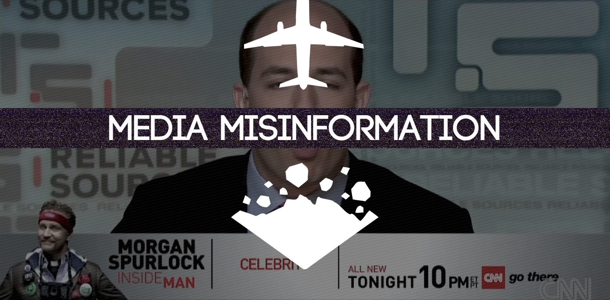

Media Misinformation
2014 - Interactive Website
Collaboration with Chris Petruccio (US) and Rachel Grey (NZ)
Media Misinformation is an interactive website the attempts to highlight the misinformation circulated in mainstream media. That is, that stories are reported over and over ad infinitum in order to fill time rather than to actually report the news that is occuring and/or other more important stories. The site utilizes two specific stories based on the collaborators locations, the United States and New Zealand, through video, text, and graphic information on two large scale over-reported stories, Malaysian Airlines flight 370 and The Christchurch earthquake respectively.
For this collaboration individual facets were split up between the collaborators as follows: Web layout/design/programming by Luke Juntunen, Video production and editing by Chris Petruccio, and Posters by Rachel Grey.

See Website
Check out more work by: